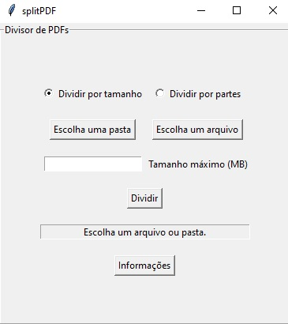

Como usar:
Realizar o donwload pelo link acima e extrair o arquivo .zip baixado.
Acessar a pasta splitPDF e executar o programa splitPDF.exe.
Ao executar o programa, sua tela principal aparecerá.
Escolha se deseja dividir o(s) arquivo(s) por tamanho ou por partes.
A divisão por tamanho produzirá arquivos de saída com o tamanho máximo especificado (em MB).
A divisão por partes produzirá tantos arquivos de saída quanto forem especificados.
Em seguida escolha se deseja dividir apenas um arquivo ou todos os arquivos .pdf que estão em uma pasta de seu computador.
Caso deseje dividir apenas um arquivo, clique no botão "Escolha um arquivo". Uma janela irá se abrir. Navegue pelas pastas de seu computador até encontrar o arquivo que deseja dividir.
Caso deseje dividir todos os arquivos .pdf que estão em uma determinada pasta, clique no botão "Escolha uma pasta". Uma janela irá se abrir. Navegue até a pasta em que estão os arquivos que deseja dividir.
Após escolher o arquivo ou pasta, o seu endereço deve aparecer na barra abaixo do botão "Dividir". Verifique se selecionou a pasta ou arquivo correto.
Digite o tamanho máximo permitido para os arquivos de saída, ou a quantidade de partes que deseja.
O programa funciona apenas com números inteiros maiores que zero.
Se um número real for inserido, ele será automaticamente convertido para o inteiro anterior. Se algo diferente de um número for digitado, uma mensagem de erro aparecerá.
Clique no botão "Dividir" e aguarde até que a mensagem "Sucesso" apareça na barra abaixo dele.
Erros comuns:
-
Durante a execução do programa ele criará pastas, dentro da pasta selecionada, ou na mesma pasta que o arquivo selecionado, com o mesmo nome dos arquivos .pdf que serão divididos.
Se essas pastas já existirem, não será possível para o programa criá-las e ele falhará a execução, sem dividir o arquivo que causou o conflito.
Esta escolha foi feita para evitar que arquivos sejam sobrescritos por acidente.
Para evitar erros, garanta que não existe nenhuma pasta com o mesmo nome dos arquivos .pdf que deseja dividir.
-
Na divisão por tamanho:
Arquivos .pdf gerados a partir de fotos tiradas por smartphones podem ter tamanhos muito grandes por página, o que pode atrapalhar a execução do programa.
O mesmo pode acontecer com imagens scaneadas em resolução muito grande, ou arquivos .pdf com muitas imagens.
Caso os arquivos de saída apresentem inconsistências em seus tamanhos ou sejam gerados vários arquivos com uma única página cada, tente comprimir os arquivos de entrada para reduzir a resolução e o tamanho de cada página.
-
Há um bug conhecido com arquivos relativamente muito pequenos (em que o tamanho (em bytes) de cada página é muito pequeno), que pode fazer o programa rodar para sempre e não executar as divisões.
Imagens:

Perguntas comuns
- Como posso ter certeza que não estou baixando e instalando vírus em meu computador?
-
O splitPDF é um software livre, o que significa que, entre outras, todos tem a liberdade de analisar seu código,
bastando clicar aqui.
-
Embora nem todas as pessoas possam compreender o código "cru" como disponibilizado, o fato de que ele está disponível
abertamente para todos auditarem ajuda a garantir a sua idoneidade.
- Estou instalando algum rastreador de mídias sociais ou de anúncios? Minha localização ou dados estão sendo coletados?
-
Não. O splitPDF não exige nenhum tipo de identificação para seu download ou uso e não coleta nenhum dado do usuário,
seja em seu site, seja em seu programa.
- Estou com um problema na execução do programa. Como posso pedir suporte ou reportar um bug?
-
Utilizando o repositório do projeto ou enviando um email para tjfacil@tjfacil.com.